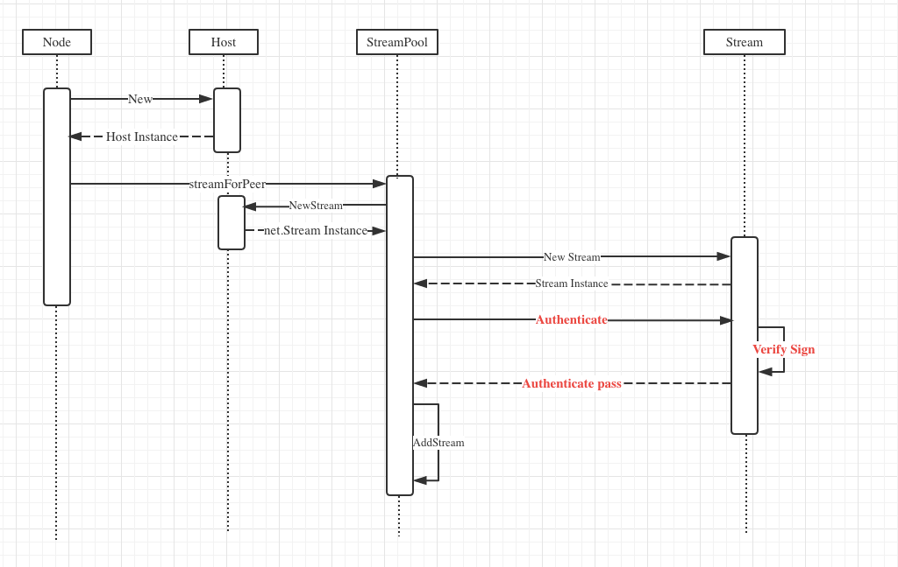

6. 身份认证¶
6.1. 背景¶
Xuperchain节点之间存在双重身份：P2P节点ID和Xuperchain address，为了解决节点间的身份互信，防止中间人攻击和消息篡改，节点间需要一种身份认证机制，可以证明对称节点声明的XChain address是真实有效的
6.2. 名词解释¶
- Xuperchain address：当前节点的address，一般为data/keys/address
- P2P节点ID：当前节点P2P的peer.ID
6.3. P2P建立连接过程¶

连接建立时序
6.4. 实现过程¶
- 新建的net.Stream连接，已经完成了ECDH密钥协商流程，因此此时节点间已经是加密连接。
- 连接建立后，增加一步身份认证流程，如果通过，则stream建立成功，加入到streamPool中
其中，身份认证流程如下：
- 身份认证流程通过开关控制，可开启和关闭 DefaultIsAuthentication: true or false
- 身份验证支持XChain address的验证方式
- 如果开启身份验证，则身份验证不通过的Stream直接关闭
- 身份验证是使用XChain的私钥对PeerID+XChain地址的SHA256哈希值进行签名，并将PeerID、Xuperchain公钥、Xuperchain地址、签名数据一起传递给对方进行验证
6.5. 主要结构修改点¶
1 2 3 4 5 6 | // stream 增加authenticate接口
func (s *Stream) Authenticate() error {}
// 收到身份验证消息后的回调处理函数接口
func (p *P2PServerV2) handleGetAuthentication(ctx context.Context, msg *xuper_p2p.XuperMessage) (*xuper_p2p.XuperMessage, error) {}
|